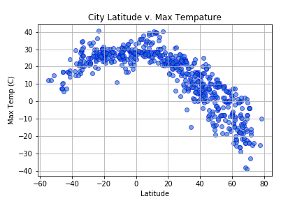

City Latitude & Temperature

Lines of latitude run east to west, with the equator line at Latitude 0 degrees, the south pole at -90 degrees and the north pole at 90 degrees. Not surprisingly, we see maximum daily temperature peak around the equator, well known to be one of the warmest parts of the earth. As you go north and south of the equator, maximum temperature declines as the the climate becomes cooler and more temperate.
What is potentially surprising from this figure is how many more data points we have north of the equator. This might be due to bias in data collection. However, it you look at any map, notice how much more land is at 60 degrees north than there is at 60 degrees south. If we were trying to reach conclusions about temperature in different hemispheres, we would need to consider this bias arising from distributions of land and cities geographically.